Exposición
Fieldwork and exhibition design
To design Exposición, I drew upon fieldwork in Huelva, Andalusia, where the intensive agrochemical industry has produced a vividly humanmade topography, from its expansive ‘sea’ of plastic polytunnels to the largest radioactive waste deposits in Europe. Strawberry pickers, predominantly women from Morocco, are denied permanent residency while bearing the burden of exposure to carcinogenic and endocrine-disrupting herbicides. Following my fieldwork in Huelva, I felt compelled to bring my field notes and landscape photography to life by designing an immersive and multisensory space. The title of the exhibition reflected this aim; the Spanish word ‘exposición’ can be translated as both (chemical) exposure and (art) exhibition. The idea was that Exposición would tell multiple stories, interweaving the perspectives of seasonal workers and activists with the visitor's own embodied experience.
In the centre of the exhibition space stood a greenhouse with an arched steel frame and translucent membrane. Visitors could enter the greenhouse to experience foggy air, a soundscape of blended field recordings, and soil under their feet. They could also walk around the installation and engage with wall-mounted photographs, activist posters, digital displays, research collages, and interview transcripts. These media collectively conveyed a social and political context for the greenhouse installation. While not a direct representation by any means, the installation catalysed reflection. One visitor stated that they could ‘re-sense’ the atmosphere, allowing them to better imagine what it would be like to work in such harsh conditions.
We gathered feedback through spontaneous visitor interactions and ethnographic observation, which allowed us to fine tune the levels of fog in the greenhouse and to accommodate people’s desire to sit on the soil by adding hessian sacks. In this sense, Exposición was conceived as a prototype exhibition. It lasted only three days and received a steady footfall of students, staff, friends, and family. As the first art exhibition held at the Institute of Geography, the execution required a proactive approach to organisation and communication with building managers. Fortunately, the staff and faculty were incredibly supportive and ultimately welcomed the creative experimentation into their workplace. The project has been generative in terms of follow up publications, international conference presentations, and a potential remake in the pipeline with a more ambitious production budget.


 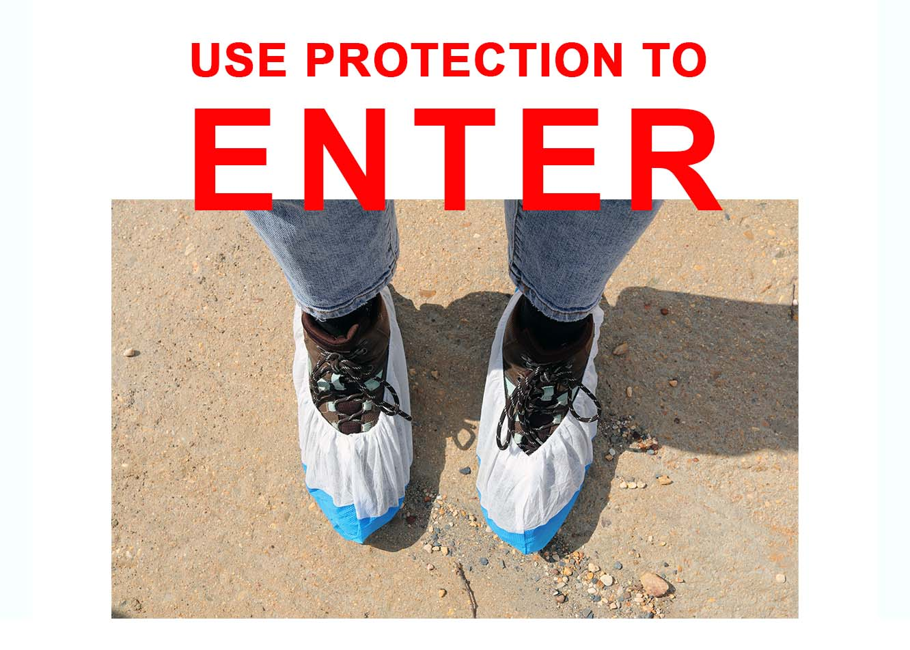
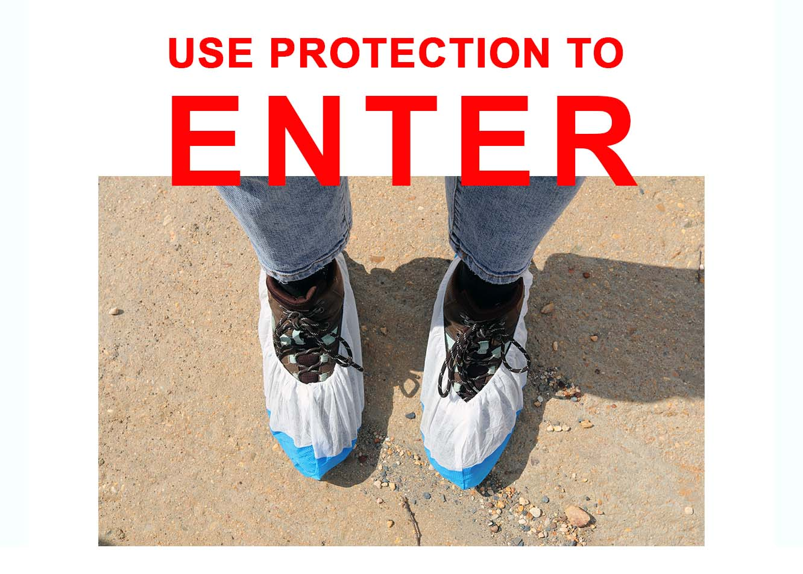
 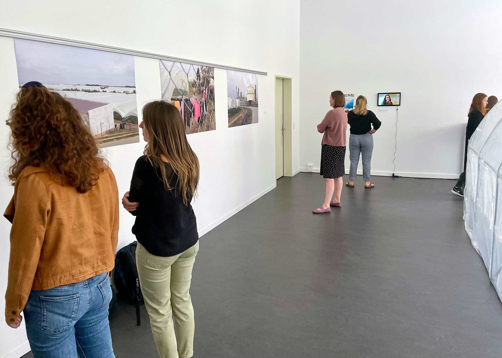
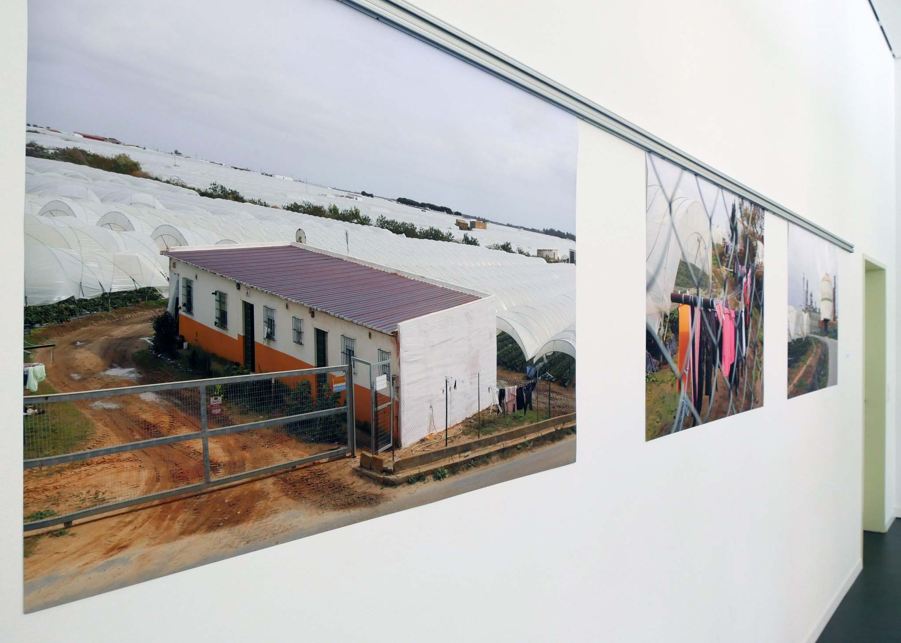
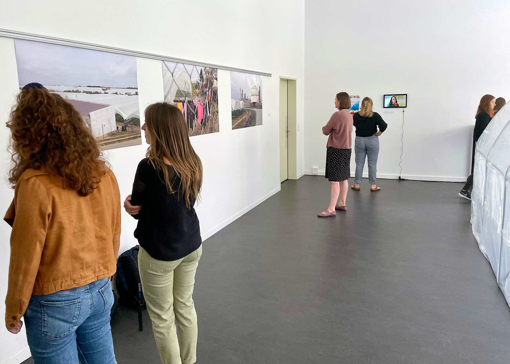
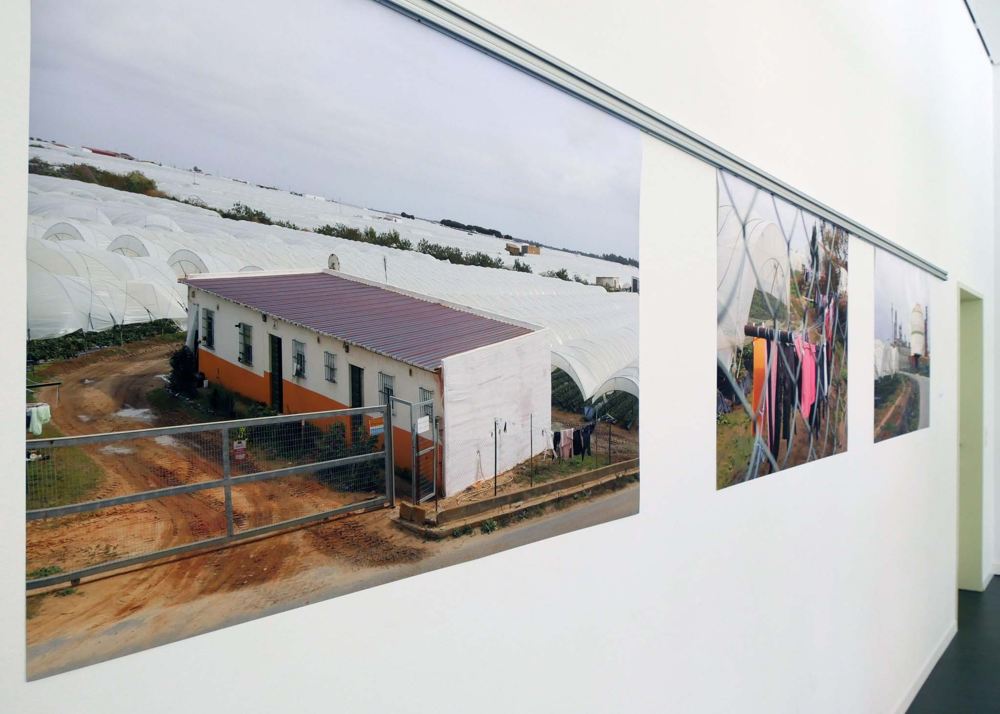

 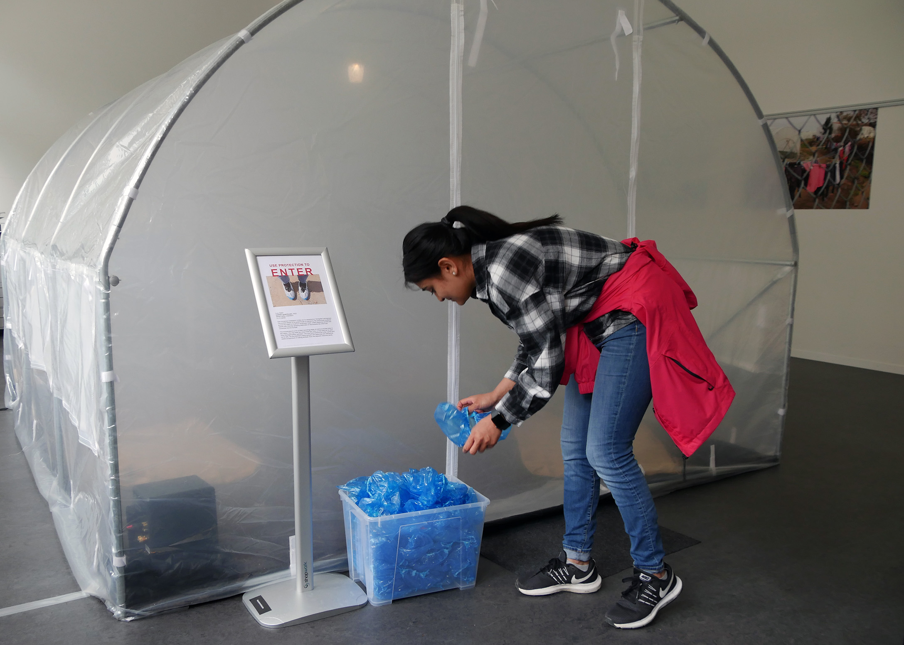
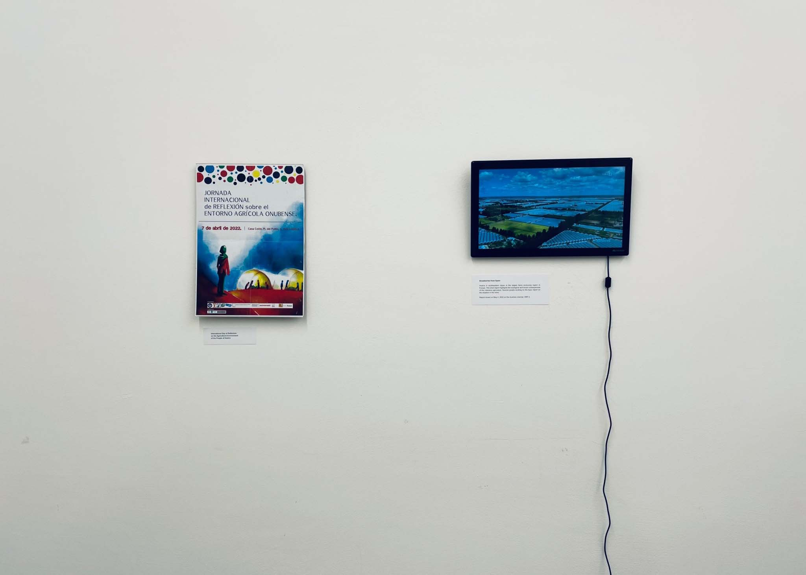
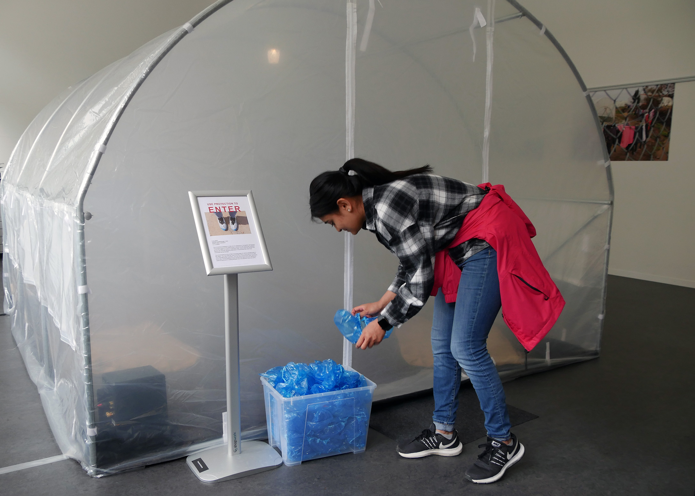
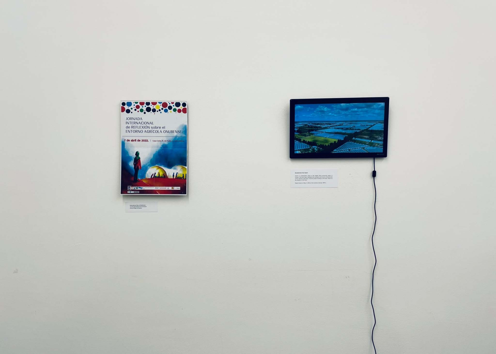

 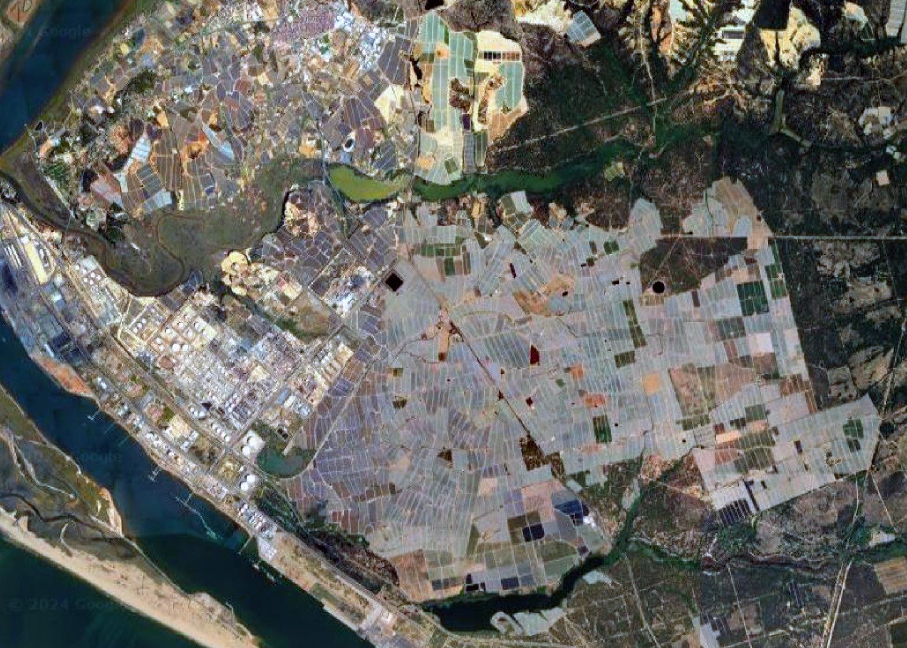
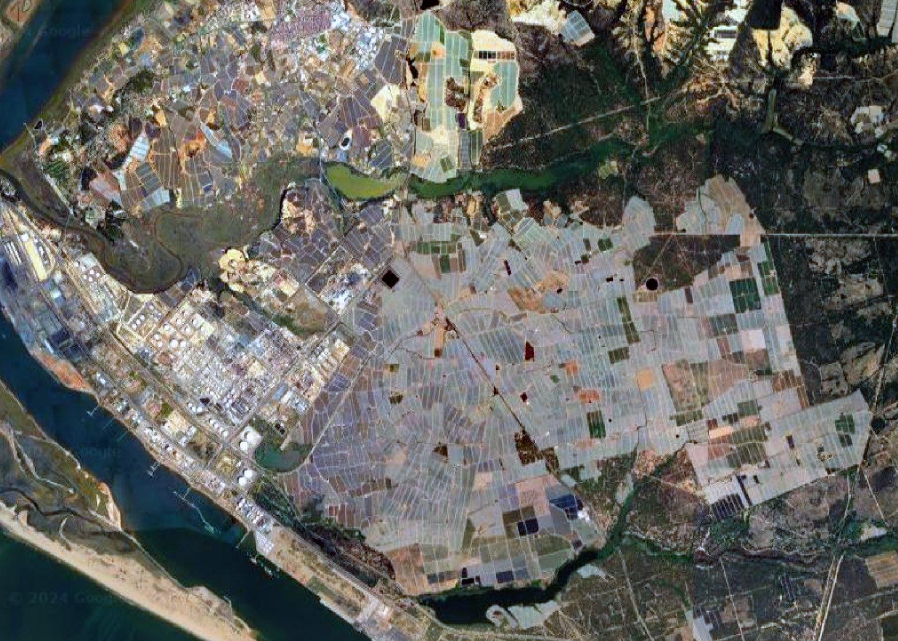